Since Atlas is a fairly large and complex project, one article was definitely not enough to explore all of its capabilities. Building on the previous article, we will explore classifications and glossary, the REST API, and two more sources of lineage information (Spark and Kafka).
Classification
Let's start with classification. In our previous example we created some Hive tables containing information about people and their documents, and now we'll put ourselves in the shoes of a data steward: How can we describe the data contained in a table, or even in a single column? How can we explain that some data should not be visible to everybody, or that their value is higher, or that they are covered by a SLA?
Let's take the people table we created before, which looks like the following:
| name | surname | age | person_id |
|------|---------|-----|-----------|
| Jane | Doe | 22 | 3 |
| John | Smith | 30 | 1 |
...
We might want to say that this table contains personally identifying information (PII), so that other teams can create policies to control the access to such information. In Atlas, doing this is a matter of creating the classification itself:
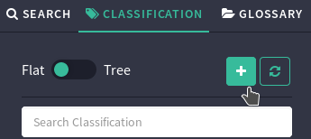
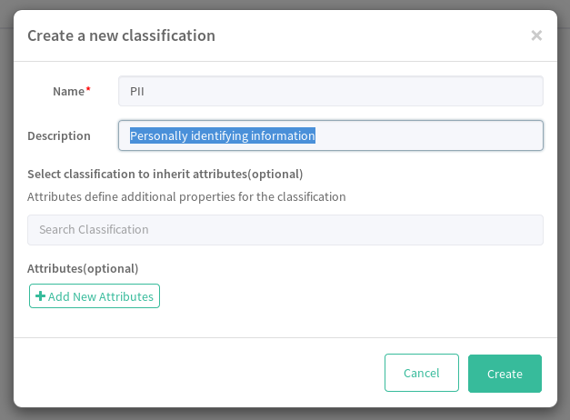
and assigning it to the items we want to classify:
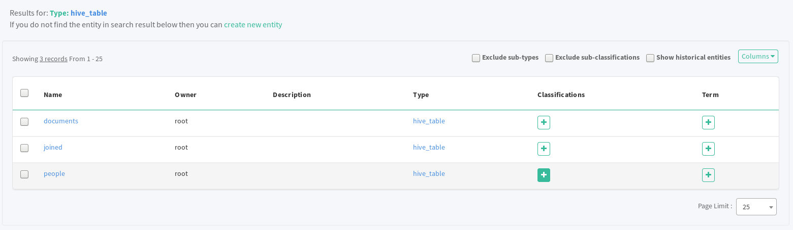
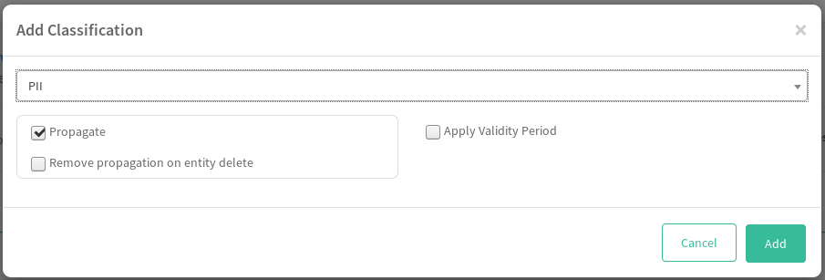
An interesting thing we will see is that this classification automatically extends to the joined table, and that is where Atlas really shines: the classification is propagated thanks to the lineage information that relates all these tables.
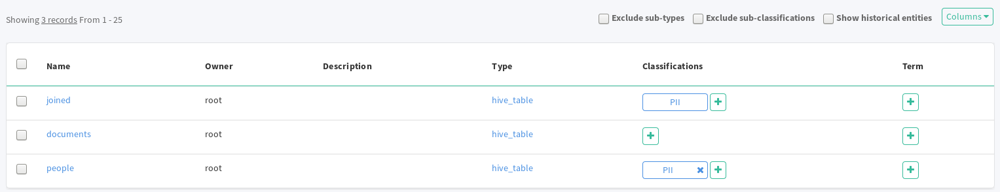
Let's create another classification, External, with a Group string attribute:
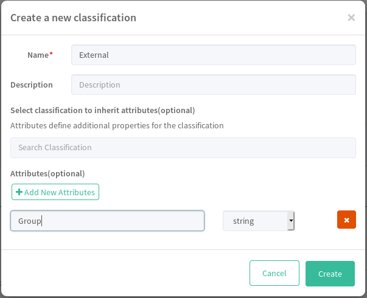
This classification is meant to capture the provenance of a certain dataset, and for this reason it is not to be automatically propagated through the lineage (if a certain group is responsible for a dataset, it is not necessarily responsible for derived data). We can prevent the propagation of a classification by clicking on the "Propagate" checkbox when assigning the classification to an item:
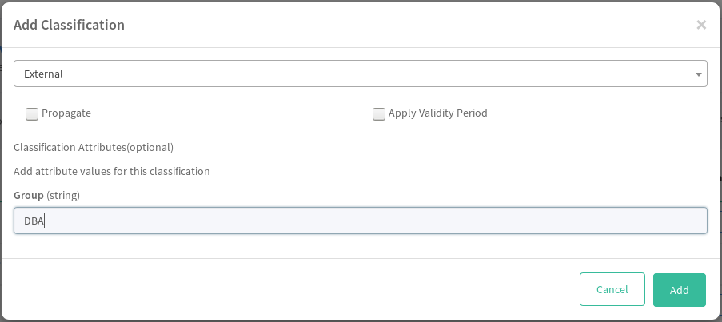
Glossary
We have seen how to classify the metadata and how the classifications take advantage of lineage information. What if we want to attach tags describing data and metadata according to a specific terminology? In pretty much the same way we have created classifications, we can create one or more glossaries to group together terms and categories.
In the "Glossary" section we need first of all to create a glossary, for instance Identification:
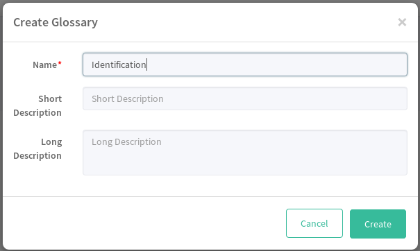
Then, we create a category by clicking on the "Terms/Category" selector and selecting "Create category" from the glossary contextual menu:
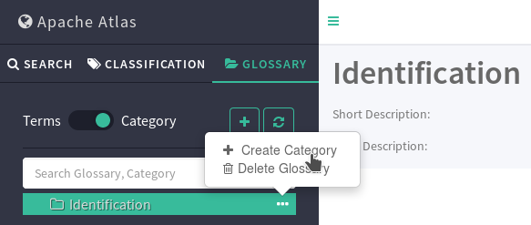
Now, in the same way, we switch to "Terms" and create the two terms National ID card and Passport. If we click on any of the terms, we will see the term's detail page where we can assign classifications and categories. We can even create relationships between terms, for instance to say that a National ID card is somewhat related to a Passport via a seeAlso relation. After this, we can finally assign the terms to any metadata item, for instance to the document table, by clicking on the plus sign under the "Term" column in the search view:
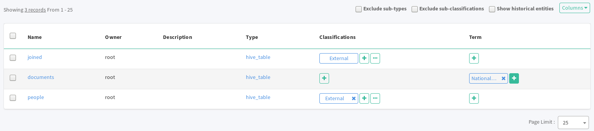
For further information, the Glossary page on the Atlas website is very detailed and shows some useful examples.
The REST API
Another very strong feature that Atlas offers is its rich REST API. Basically, everything that can be done via the UI can be done via the API as well. A Swagger interactive interface is available on the website for easier exploration; here we will touch on the main sections with a couple examples.
As usual, the following API calls can be performed with any client (curl, Postman, etc.). In the following, every call is run via curl with JSON as the response content type and with the correct access credentials (which, as a default, are admin / admin); in other words, an API call such as /api/atlas/v2/types/typedefs is performed with:
$ curl -u admin:admin -H "Accept: application/json" http://localhost:21000/api/atlas/v2/types/typedefs
If the client is based on the command line, a tool such as json_pp is recommended in order to pretty-print the JSON response.
Types
To list all entity types:
/api/atlas/v2/types/typedefs
Description of a single type by type name (e.g. hive_table):
/api/atlas/v2/types/typedef/name/hive_table
Search
Metadata entities can be searched in multiple ways. The basic search endpoint has to be used with at least one parameter, for instance the type name:
/api/atlas/v2/search/basic?typeName=hive_table
or a full-text query:
/api/atlas/v2/search/basic?typeName=hive_table&query=people
or a classification:
/api/atlas/v2/search/basic?classification=PII
If we had deleted any entities (e.g. if we dropped any Hive tables), we would see a few entities with a field "status": "DELETED"; in order to exclude such entities we should add the excludeDeletedEntities=true parameter:
/api/atlas/v2/search/basic?typeName=hive_table&query=people&excludeDeletedEntities=true
An advanced search endpoint using Atlas DSL is available as well, but we will not cover it here. Further information on the DSL can be found here.
Single entity
The previous endpoints returned a (possibly empty) list of entities as a result. If we want to explore a single entity, we have to extract its guid from any of the previous calls. Let's say we are interested in the entity with "guid": "ad9915a8-fdab-4570-964f-8f636a8da20c"; a rich description of the entity can be obtained by calling this endpoint:
/api/atlas/v2/entity/guid/ad9915a8-fdab-4570-964f-8f636a8da20c
We might be interested in the entity's classifications only:
/api/atlas/v2/entity/guid/ad9915a8-fdab-4570-964f-8f636a8da20c/classifications
or in its lineage:
/api/atlas/v2/lineage/ad9915a8-fdab-4570-964f-8f636a8da20c
Since the lineage is a graph, the relations object will contain a list of all the relationships where each relationship is an edge connecting an entity to another:
{
"relations": [
{
"fromEntityId" : "edefa7cb-c19d-4955-9da5-22e43786ced5",
"relationshipId" : "33591207-ac0d-4374-91a2-5fadd71d6f0c",
"toEntityId" : "9a7712d5-31f8-403a-92ea-77fad0d59e61"
},
{
"fromEntityId" : "ad9915a8-fdab-4570-964f-8f636a8da20c",
"toEntityId" : "edefa7cb-c19d-4955-9da5-22e43786ced5",
"relationshipId" : "22bd9863-0161-4334-b73f-1f33fa8880cb"
}
]
}
In order to explore each of these relationships, we can call the relationship endpoint with the guid of the relationship we are interested in:
/api/atlas/v2/relationship/guid/33591207-ac0d-4374-91a2-5fadd71d6f0c
Glossary
To retrieve all glossaries:
/api/atlas/v2/glossary
To describe a specific glossary by using its guid:
/api/atlas/v2/glossary/dd2de287-96ae-4c24-8402-1eea0d477b59
and, more specifically, its terms:
/api/atlas/v2/glossary/dd2de287-96ae-4c24-8402-1eea0d477b59/terms
and categories:
/api/atlas/v2/glossary/dd2de287-96ae-4c24-8402-1eea0d477b59/categories
More (meta)data sources
In order to see how Atlas can be expanded with more sources, we will add a connector to Apache Spark and use it to track the lineage of both standard batch processes and stream processes with Apache Kafka as a source. As usual, since the focus of the article is not on any of the two sources, the easiest way to get started with them will be used.
Preparation
Let's first of all install Spark. We could use the previously installed Apache Bigtop repository and install Spark via yum, but since the connector needs at least Spark 2.3 to work, we need to download it (choosing the package pre-built for Hadoop 2.7) and extract it to a folder of our choice, for instance /opt/spark. When this is done, we need to copy the Atlas configuration file in the Spark configuration folder, for instance (if Atlas was installed in /opt/atlas/apache-atlas-2.0.0/):
$ cd /opt/spark/spark-2.4.3-bin-hadoop2.7
$ cp /opt/atlas/apache-atlas-2.0.0/conf/atlas-application.properties conf/
After this, we need to download the Spark-Atlas connector; we will use Hortonworks's connector since it has been created for this specific use case. Once again, we will need Maven and Git installed (but we can use any version of Maven):
$ git clone https://github.com/hortonworks-spark/spark-atlas-connector
$ cd spark-atlas-connector
$ mvn package -DskipTests
Once the package is built, we need to "patch" Atlas to include the Spark model:
$ cp patch/1100-spark_model.json /opt/atlas/apache-atlas-2.0.0/models/1000-Hadoop
and then we have to restart Atlas:
$ cd /opt/atlas/apache-atlas-2.0.0/
$ ./bin/atlas_stop.py
$ ./bin/atlas_start.py
If we open Atlas again and look into the "Search By Type" dropdown menu, we should see a few more entity types starting with spark_.
Spark batch
As an example, let's create a test CSV file in /tmp/test.csv with this content:
person_id,name,surname
1,John,Smith
2,Jane,Doe
We are now ready to launch the Spark shell as follows:
$ /opt/spark/spark-2.4.3-bin-hadoop2.7/bin/spark-shell \
--jars spark-atlas-connector/target/spark-atlas-connector_2.11-0.1.0-SNAPSHOT.jar \
--conf spark.extraListeners=com.hortonworks.spark.atlas.SparkAtlasEventTracker \
--conf spark.sql.queryExecutionListeners=com.hortonworks.spark.atlas.SparkAtlasEventTracker \
--conf spark.sql.streaming.streamingQueryListeners=com.hortonworks.spark.atlas.SparkAtlasStreamingQueryEventTracker
From the Spark shell, let's run the following commands to read the test CSV file and write it to a different CSV file with one derived column:
val test = spark.read.option("header", true).csv("/tmp/test.csv");
test.withColumn("fullname", concat(upper(col("surname")), upper(col("name"))))
.write.csv("/tmp/test2.csv");
(A series of warnings about configuration values might appear.)
If everything went fine, on Atlas we should see at least one item when searching by the spark_process type. When we open the detail page for such item, the lineage section should show something like this:
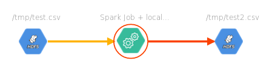
We will now save the same file to a Hive table:
test.write.saveAsTable("spark_test_table");
spark.read.table("spark_test_table")
.withColumn("fullname", concat(upper(col("surname")), upper(col("name"))))
.write.saveAsTable("spark_test_table_derived");
Now the lineage will look like this:
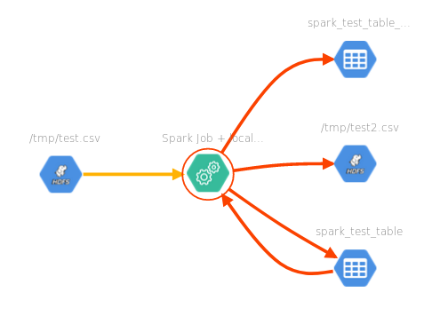
(If the lineage does not change, try to click on the "Clear" button and search for Spark processes again.)
The current version of the connector considers everything that is run in a single shell execution as a single process, so the lineage will include all the steps together.
Spark streaming
In order to track the lineage of a Spark streaming application, we will use Apache Kafka as a stream source. Atlas already includes a Kafka server, but we will download the full package in order to create the topics more easily.
$ wget http://apache.mirror.anlx.net/kafka/2.2.0/kafka_2.12-2.2.0.tgz
$ tar zxvf kafka_2.12-2.2.0.tgz
$ cd kafka_2.12-2.2.0/
In order to create a topic, we can run the following:
$ ./bin/kafka-topics.sh --create --bootstrap-server localhost:9027 --replication-factor 1 --partitions 1 --topic test-topic
The address used as a bootstrap server has to be the same that is configured as the value of the atlas.kafka.bootstrap.servers parameter in atlas-application.properties (the Atlas configuration file within its conf directory), unless we want to run a separate Kafka server.
Now we need to store some data into Kafka. We'll do it with the following command:
$ ./bin/kafka-console-producer.sh --broker-list localhost:9027 --topic test-topic
where we will be prompted to insert one or more lines; after inserting a few lines, Ctrl + D will close the prompt. We are now ready to run the Spark shell again, this time adding --packages org.apache.spark:spark-sql-kafka-0-10_2.11:2.4.3 to avoid Kafka-related exceptions:
$ /opt/spark/spark-2.4.3-bin-hadoop2.7/bin/spark-shell \
--jars /opt/atlas/spark-atlas-connector/spark-atlas-connector-assembly/target/spark-atlas-connector-assembly-0.1.0-SNAPSHOT.jar \
--conf spark.extraListeners=com.hortonworks.spark.atlas.SparkAtlasEventTracker \
--conf spark.sql.queryExecutionListeners=com.hortonworks.spark.atlas.SparkAtlasEventTracker \
--conf spark.sql.streaming.streamingQueryListeners=com.hortonworks.spark.atlas.SparkAtlasStreamingQueryEventTracker \
--packages org.apache.spark:spark-sql-kafka-0-10_2.11:2.4.3
From the shell, we can then run this:
val df = spark.readStream.format("kafka")
.option("kafka.bootstrap.servers", "localhost:9027")
.option("subscribe", "test-topic")
.option("startingOffsets", "earliest")
.load;
val df2 = df.selectExpr("topic", "CAST(key AS STRING)", "CAST(value AS STRING)")
.writeStream.outputMode("append").format("json")
.option("path", "/tmp/stream_kafka.json")
.option("checkpointLocation", "/tmp/chkpoint_dir")
.start;
where we basically create a dataset out of a Kafka stream by subscribing to the test-topic topic and starting from its beginning, then we create a new stream to be written as a JSON file (actually, as a directory containing multiple JSON files).
If we check the lineage for this process, we should now see something like this:
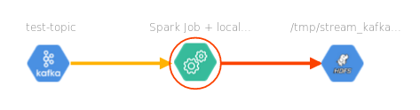
We can even route the data from the first topic into another Kafka topic! All we need to do is to create a new topic:
$ /opt/kafka/kafka_2.12-2.2.0/bin/kafka-topics.sh --create --bootstrap-server localhost:9027 --replication-factor 1 --partitions 1 --topic test-topic-rec
and then, from the shell, run this:
val df = spark.readStream.format("kafka")
.option("kafka.bootstrap.servers", "localhost:9027")
.option("subscribe", "test-topic")
.option("startingOffsets", "earliest")
.load;
val df2 = df.selectExpr("topic", "CAST(key AS STRING)", "CAST(value AS STRING)")
.writeStream.format("kafka")
.option("kafka.bootstrap.servers", "localhost:9027")
.option("topic", "test-topic-rec")
.option("checkpointLocation", "/tmp/chkpoint_dir_rec")
.start;
which is the same as before except for the different type of write stream (Kafka rather than JSON files), and will result in this lineage:
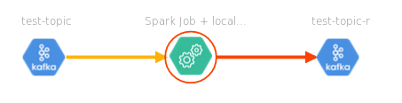
(In case an exception such as org.I0Itec.zkclient.exception.ZkTimeoutException: Unable to connect to zookeeper server 'localhost:9026' with timeout of 200 ms is thrown, the value of the atlas.kafka.zookeeper.connection.timeout.ms field within the atlas-application.properties configuration file should be increased (e.g. set it to 2000) and Atlas be restarted.)
As we can see, lineage information from a Spark batch or streaming job can be easily sent to Atlas. Spark ML pipelines are also supported by the connector, but since this would require patching and recompiling Atlas, I decided to skip them for the time being.
Conclusions
In this article we have explored Atlas capabilities into more details, understanding what classifications and glossaries are and how to make use of them, then listing a few REST API endpoints along with examples, and finally trying out an external connector to add even more lineage information. Atlas is quite mature as a solution, but documentation is still a bit scattered; even if I haven't touched on everything (especially the underlying datastores and the creation of new entities), I hope to have added a little bit to the coverage of this fantastic tool.